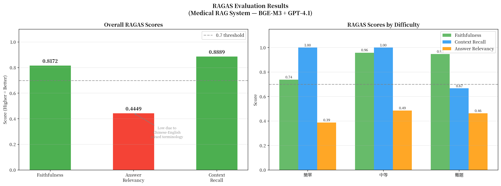

大型語言模型對急診病歷快速檢索並提供有據可查的問答
LangChain-Based Medical RAG System
Side Project｜2025.12–2026.2
專案概述
針對急診病歷建構 Retrieval-Augmented Generation（RAG）問答專案， 用 AI 讓系統從急診紀錄裡找出答案，並標明來源。 內容涵蓋透過實驗選定最佳 Embedding 模型與參數組合、FAISS 向量檢索、到 RAGAS 量化評估，每個技術決策都有數據支撐。 確保系統回答有依據、可追溯。
實驗流程與選擇依據
①資料規模實驗
比較 5K / 20K / 50K 三種規模的 retrieval 品質，觀察到 5K→20K 改善顯著，20K→50K 收斂，
選定 50,000 筆作為 cost-performance 平衡點。
②文本長度分析(Chunk Size)
分析資料分布後發現平均長度僅 167 字、最長 464 字，69.3% 的文本在 100~200 字之間，
選定 chunk_size=200，overlap=20。
③Embedding 模型比較
在統一 Cosine Similarity 尺度下比較三個模型：
.png)
綜合數據：三模型 × 三資料規模（Cosine + 建庫時間）
.png)
Cosine Similarity 趨勢（5K / 20K / 50K）
.png)
建庫時間比較（50K 資料）
.png)
四個 Query 的 Cosine Similarity 熱圖（50K）
| 模型 | Cosine Similarity（50K） | 建庫時間 |
|---|---|---|
| MiniLM | 0.6870 | 102 秒 |
| Text2Vec | 0.6947 | 342 秒 |
| BAAI/bge-m3 ✓ | 0.7005 | 1056 秒 |
選定 BAAI/bge-m3，中英文混合醫療文本表現最佳。
系統架構
🔬 實驗決策流程
資料載入
65,000 筆護理記錄（中英文混合）
↓
文本長度分析(Chunk Size)
平均 167 字｜最長 464 字
→ 選 200字
↓
規模實驗
5K / 20K / 50K
→ 選 50K
↓
Embedding 模型比較
MiniLM / BGE-M3 / Text2Vec
→ 選 BGE-M3
↓
建正式 Vectorstore
FAISS + BGE-M3 + 50K + Chunk 200
↓
RAGAS 評估集設計
30 筆（簡單 / 中等 / 難題 各 10 筆）
↓
RAGAS 評估結果
Faithfulness 0.82｜Context Recall 0.89｜Answer Relevancy 0.44
🚀 RAG 系統流程
使用者輸入問題
語意搜尋 或 指定 Source ID
↓
BGE-M3 向量化
問題 → 1024 維向量（GPU 加速）
↓
FAISS 向量檢索
Top-5 Chunks
↓
Context 組合
5 個 Chunks + Source ID + Similarity 分數
↓
Prompt 設計
醫療助理角色 + 拒答機制 + 引用來源
↓
GPT-4.1 生成回答
含 [Source: ID] 引用
↓
RAGAS 評估
gpt-4.1-mini Judge｜Faithfulness / Context Recall / Answer Relevancy
RAGAS 量化評估結果
評估集：30 筆（簡單 / 中等 / 難題各 10 筆），以直接來自原文的資訊作為答案，可驗證。
| Metric | 分數 | 說明 |
|---|---|---|
| Faithfulness | 0.82 | 82% 的回答有 context 依據，幻覺率控制良好 |
| Context Recall | 0.89 | 89% 的相關資訊被正確撈回 |
| Answer Relevancy | 0.44 | 偏低，因中英混合術語導致 judge 反推不穩定 |
按難度分析：簡單和中等題的 Context Recall 達到滿分（1.00），難題下降至 0.67，符合預期。

技術亮點
實驗驅動的參數選擇
資料規模、Embedding 模型、Chunk Size 均有實驗數據支撐，每個決策都可量化解釋。
LangChain FAISS Cosine Bug 修正
發現
DistanceStrategy.COSINE 實際回傳 L2 距離的已知問題
（GitHub issue #428, #17333），改用 sklearn 手動計算確保正確性。
RAGAS 框架量化評估
設計三難度評估集，用 gpt-4.1-mini 當 judge，產出 Faithfulness / Context Recall /
Answer Relevancy 三項指標。
Demo
語意搜尋
問
病人是否有意識不清的情況？
答
根據提供的紀錄，病人有意識不清的情況。
[Source: 26185] 家人表示在家發現意識不清，主訴為 conscious disturbance。
[Source: 47437] 病人被描述為意識程度改變（GCS 9~13）。
[Source: 26185] 家人表示在家發現意識不清，主訴為 conscious disturbance。
[Source: 47437] 病人被描述為意識程度改變（GCS 9~13）。
Source ID 精確查詢
問
這位病人有什麼症狀？（source_id=26185）
答
病人有意識不清（conscious disturbance）[Source: 26185]。
護理紀錄記載家人發現病人意識不清，明確列出無頭暈、無嘔吐、 無腹瀉、無發燒、無腹痛、無冒汗。
護理紀錄記載家人發現病人意識不清，明確列出無頭暈、無嘔吐、 無腹瀉、無發燒、無腹痛、無冒汗。
域外問題拒答
問
進擊的巨人米卡莎有跟艾蓮在一起嗎？
答
根據提供的紀錄，無法找到相關資訊。
Technical Stack
| 類別 | 工具 |
|---|---|
| 語言 | Python |
| 框架 | LangChain |
| Embedding 模型 | BAAI/bge-m3、MiniLM、Text2Vec（實驗比較） |
| 向量資料庫 | FAISS |
| LLM | GPT-4.1（問答）、GPT-4.1-mini（RAGAS judge） |
| 評估框架 | RAGAS |
| 開發環境 | Google Colab（T4 GPU） |
| AI協作工具 | Claude |
| 其他 | sklearn、HuggingFace、datasets |